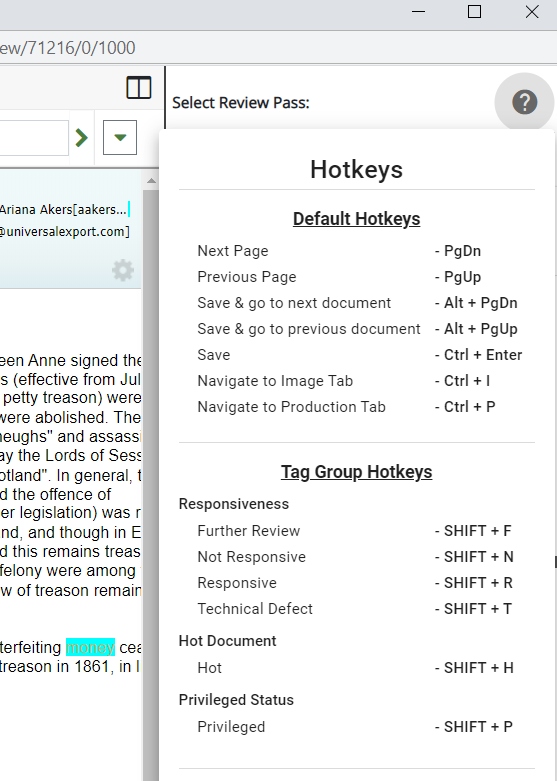

Hotkeys, otherwise known as keyboard shortcuts, allow reviewers to quickly apply tags and navigate through documents when working in a batch. Hotkeys are a combination of keys which, when pressed simultaneously, perform a specific action associated with that shortcut.
The hotkeys in the following table come with
The following hotkeys are available by default:
|
Shortcut |
Description |
|---|---|
|
PgDn |
Navigates to the next page in a document. This shortcut applies only on the Image and Production tabs. |
|
PgUp |
Navigates to the previous page in a document. This shortcut applies only on the Image and Production tabs. |
|
Alt + PgDn |
Saves any changes to the document and opens the next document in the batch. |
|
Alt + PgUp |
Saves any changes to the document and opens the previous document in the batch. |
|
Ctrl + Enter |
Saves any changes to the document. |
|
Ctrl + I |
Navigates to the Image tab, if not already open. |
|
Ctrl + P |
Navigates to the Production tab, if not already open. |
|
Alt + C |
Applies the previous document's tags to the current document. |
|
Ctrl + Backspace |
Delete Selected Redaction. |
Administrators can assign hotkeys to individual tags. After a hotkey has been assigned, reviewers working in the Document Viewer window can quickly apply a tag to a document by means of pressing the keys associated with that shortcut. For example, if an administrator has assigned a hotkey of SHIFT + R to a tag marked "Responsive," a reviewer needs only to press their SHIFT and R keys simultaneously to apply that tag to the document.
You can access the list of hotkeys from the Document Viewer window at any time by selecting the icon in the top-right corner of the window.

To review documents by using the hotkeys described in the previous sections, proceed with the following instructions:
In

Click  to open the desired case or select a review pass located on the right side of the funnel graph.
to open the desired case or select a review pass located on the right side of the funnel graph.

|
|
Note: If selecting a Review Pass, the review grid opens with the batch document set, pre-defined relationships, and the coding form/tag palette. When the review pass is accessed for the first time, the Document Viewer window opens automatically with the first document in the batch |
Related Topics